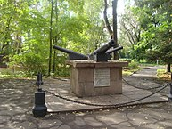
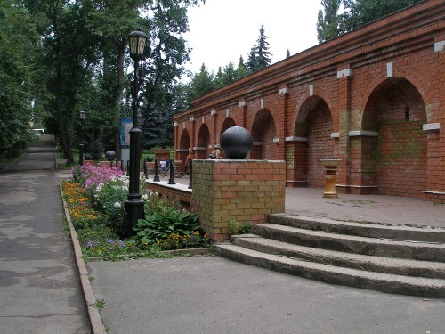
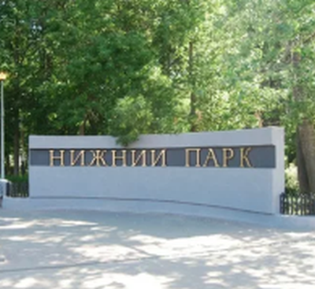

Достопримечательности Липецка


Нижний парк (Липецк)
Нижний парк — крупнейший городской парк Липецка, основанный в 1805 году.
Основание
В XVIII веке на этом месте находился Петровский пруд. В то время площадь пруда составляла 70 га. В царской России это был самый большой рукотворный водоём.

«Пушки» — памятник зарождению металлургии в Липецке
Пруд питал водой расположенные рядом Липские железоделательные заводы (см. НЛМК). После закрытия предприятия его здания некоторые время оставались. Это два каменных корпуса, деревянная контора и другие постройки. Кроме того, было два дома для заводских начальников и домик Петра I. Их снесли лишь в 1803—1804 годах. Это было необходимо для строительства курорта. Во 2-й половине 1960-х на их месте (недалеко от Петровского проезда) установили памятник зарождению металлургии в Липецке. Это три пушки, поставленные на прямоугольный пьедестал. Проект выполнил архитектор С. А. Кастюнин. 25 апреля (8 мая) 1805 года Александр I подписывает указ об открытии курорта «Липецкие минеральные воды». Директором курорта назначается Иван Николаевич Новосильцев, а главным врачом — доктор Антон Антонович Альбини. Они составляют план застройки города и курорта, но осуществить его не удалось, поскольку в 1808 году они уезжают из Липецка. Генеральный план застройки курорта и города утверждается 19 июля 1805 год. В 1809 году в город для строительства курорта приезжает архитектор А. Ф. Славинский. Начинается активное строительство каменных корпусов Липецкого курорта, вокруг которых одновременно закладывается Английский сад, положивший начало Нижнему парку. Закладываются аллеи будущего Верхнего парка на Дворянской улице. Петровский пруд тоже вошёл в состав курорта, с его дна в конце XIX века добывали целебные грязи.
Постройки, связанные с Петром I
Как считают некоторые исследователи, домик Петра I («царский дворец») был построен в конце XVII века, когда город посещал Пётр I. Он тогда следил за строительством азовской флотилии и часто ездил в Воронеж. Домик располагался на нынешней площади Революции. Он был деревянным. В 1803 году губернский архитектор В. Усачёв хотел сделать «каменный свод», но Александр I выдал резолюцию: «каменного шатра не делать, дабы дом остался в настоящем виде, а поддерживать оный постройнной починкою». Однако в 1806 году домик сгорел. Кроме того, от прежнего завода оставалось единственное здание — контора, которую называли «канцелярией Петра I». Её снесли согласно экспертизе Л. Е. Рудакова (см. Петровский проезд). В 1806 году по проекту архитектора Ворончихина было построено здание минеральных ванн. Ныне здесь административно-хозяйственное управление парка (Петровский проезд, 2).
Изображения:
 
Нижний парк на карте: